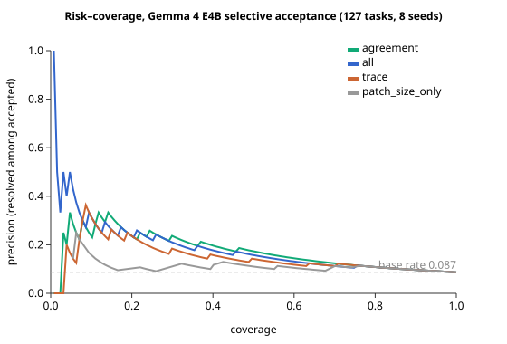

Gemma 4 Developer Agent — Paper Track submission
Small, locally-runnable language models are attractive as software-engineering agents because they are cheap and private, but they fail most repository-level bug-fix tasks while still emitting a confident-looking patch. Running Google's Gemma 4 E4B (a 4-bit-quantized, locally-servable model) as an autonomous agent on 129 SWE-bench-style bug-fix tasks, it produces a non-empty patch on 115 of 129 tasks yet resolves only 12 (9.3%). Two tasks are satisfied by an empty patch — the hidden test passes with no change — so we exclude them, leaving 127 tasks on which the agent genuinely resolves 11 (8.7%) per seed. We ask whether the agent can tell its good patches from its bad ones without the hidden tests, using only signals it computes itself: diff shape, run-trace behavior, and cross-seed agreement. Across eight seeds (1,016 runs) these signals rank correct patches above incorrect ones — cross-seed agreement is strongest (AUROC 0.840, 95% CI [0.745, 0.924]); patch size alone is near chance (0.614). But a deployable high-precision gate is out of reach at this data scale: a 90%-precision target is unreachable even for an oracle, while a 30%-precision target yields a held-out rule accepting ~14% of tasks at ~33% precision (≈3.8× base rate). A 12B model solves different bugs than E4B (union 22/127 vs 17 for either alone) — the two are complementary — but because the small model confidently accepts so little, routing does not save compute at this scale. We release the full labeled trace dataset.
A coding agent that silently submits a wrong patch is worse than one that says “I am not sure.” As small local models (one workstation GPU, no API, no data egress) are proposed for autonomous software maintenance, this failure mode becomes acute: the model is weak enough to be wrong most of the time, yet fluent enough to always produce something that looks like a fix.
We quantify this with Gemma 4 E4B on a 129-task SWE-bench-style harness: 115/129 non-empty patches, 12/129 correct. The agent is, precisely, confidently wrong. The question is the selective prediction question for a code agent: can it abstain on the patches it will likely get wrong, so what it submits is reliable, using only information available at inference time?
Contributions: (1) an empirical characterization of a small local SWE agent's confidently-wrong failure mode, with seed-dependence measured over eight samples; (2) a lightweight selective-acceptance detector from three signal families — diff shape, run-trace behavior, cross-seed agreement — evaluated with risk–coverage analysis and bootstrap CIs; (3) an honest result: the signals rank correctness (AUROC up to 0.840) but do not yield a high-precision accept gate at ~11 positives; (4) a released dataset of 1,032 labeled agent runs.
Selective prediction. The reject option dates to Chow (1970); El-Yaniv & Wiener (2010) formalized the risk–coverage trade-off; Geifman & El-Yaniv (2017, NeurIPS) applied softmax-response thresholding; SelectiveNet (2019, ICML) learned a reject head. We adopt their coverage/selective-risk definitions and report E-AURC because, at an 8.7% base rate, raw AURC is dominated by irreducible error.
Confidence & calibration for code. Verbalized confidence (Tian et al. 2023; Xiong et al. 2024) and entropy methods (Kuhn et al. 2023; Farquhar et al. 2024) estimate reliability, but Spiess et al. (ICSE 2025) show token probabilities are poorly calibrated for code — at >90% confidence only ~52% of completions pass — motivating behavioral signals over logits.
Self-consistency. Self-consistency (Wang et al. 2022) and execution-agreement selection (CodeT, Chen et al. 2022; AlphaCode, Li et al. 2022) use agreement to select a candidate; we use cross-seed agreement as an abstention signal, heeding that consensus can be confidently wrong.
Verifiers & resampling limits. Trained verifiers (Cobbe et al. 2021; Lightman et al. 2023; LEVER, Ni et al. 2023; Coder-Reviewer, Zhang et al. 2022) need large labeled data — infeasible with 11 positives. Stroebl et al. (2024) show an imperfect verifier imposes a false-positive floor resampling cannot cross — support for abstaining over sampling harder.
SWE agents. SWE-bench (Jimenez et al. 2024), SWE-agent (Yang et al. 2024), Agentless (Xia et al. 2024) define the task; SWE-Bench+ (Aleithan et al. 2024) shows many “plausible” patches are wrong or test-gaming.
Closest prior art (author-verified). EarlyEval (Shi et al.) predicts agent outcome from trajectory prefixes — but for cheap evaluation, large models, not abstention. The Draft-Model Gate (Grotov & Malykh) gates an agent via token likelihood and vetoes; we use behavioral + cross-seed signals and frame deferral. “Coding Agents Don't Know When to Act” (Gloaguen et al.) abstains on whether to act, not patch-correctness. BouncerBench (Mathews & Nagappan) and Abstain-and-Validate (Cambronero et al.) use LLM judges; Task Abstention (Zhou et al.) gives a distribution-free guarantee for function-level generation. We found no prior work combining risk–coverage/E-AURC + a whole-patch unit + a small quantized local model + behavioral trace signals + cross-seed self-consistency + an existing-tests gate + a released trace dataset.
Model & harness. Gemma 4 E4B (gemma-4-e4b-it-qat-w4a16-ct), served locally via vLLM (bf16, 4×L4) in the Kaggle Gemma 4 Developer Agent harness. Sampling fixed (temperature 1.0, top-p 0.95, top-k 64); only the seed varies, so the eight samples are exchangeable. Budget: 10 min / 40 tool calls per task.
Tasks. 129 tasks over four Python repos — Textualize/rich, encode/httpx, fastapi/fastapi, psf/requests (ids like fastapi_15661). SWE-bench-style, not the SWE-bench dataset; we do not compare to SWE-bench leaderboard numbers.
Runs. 8 seeds × 129 = 1,032 runs (~1.5 GPU-h each; 12.2 total). Label-leaking fields (resolved, test_exit_code, error, duration_seconds) are excluded from features; traces are recorded before the hidden test, so trace features are safe.
Degenerate-task exclusion. Two tasks (fastapi_14077, fastapi_14851) are “resolved” by an empty patch — the hidden test passes with no edit. These do not demonstrate repair, so we drop them, leaving 127 tasks / 1,016 runs. Removing them in fact strengthens the signal.
Unit & metrics. The unit is the task: ship one patch (seed 0, or the medoid) and accept or abstain. Coverage = accepted / 127 (empty patches always abstain); precision = resolved among accepted; selective risk = 1 − precision. We report AUROC, the risk–coverage curve, E-AURC, and operating points at target precisions, each with 2,000-sample bootstrap CIs. Thresholds are oracle (upper bound) and held-out (deployable).
Signal families. (a) Shape: files touched, lines added/removed/changed, edit regions, new files, non-Python edits. (b) Trace: tool-call/step counts, reads/edits/graph-queries, tool errors, whether tests were run (and after the last edit) and their outcome, tokens, wall-time. (c) Agreement: cross-seed patch consistency, computed leave-one-out (a sample's agreement excludes itself). Logistic models per family and union, 5-fold stratified CV and leave-one-repo-out.
Resolution is seed-dependent. Per seed ~11/127 (8.7%). Resolved-in-exactly-k seeds: {0:110, 1:5, 2:3, 3:1, 4:1, 5:1, 6:1, 7:3, 8:2}: 17/127 solve on ≥1 seed, only 2 on all eight. The agent is unstable at the edge of its ability — the variance that makes agreement informative.
| Feature family | AUROC | 95% CI |
|---|---|---|
| patch size only | 0.614 | [0.461, 0.773] |
| shape | 0.711 | [0.583, 0.829] |
| trace | 0.738 | [0.580, 0.885] |
| agreement (cross-seed) | 0.840 | [0.745, 0.924] |
| shape + trace | 0.744 | [0.593, 0.877] |
| all | 0.799 | [0.653, 0.922] |
Cross-seed agreement is strongest (lower CI bound 0.745, clear of chance); patch size alone is weakest. Correct patches use fewer steps (median 7 vs 10 tool calls) and smaller diffs in the tail (wrong-patch mean 4,396 vs 660 characters).

Agreement is the one family needing multiple samples (a deployer pays k× inference): agreement AUROC rises 0.662 (k=2) → 0.813 (k=4) → 0.840 (k=8), while all-features is already strong at k=2 (0.754). k=4 captures most of the agreement signal.
(i) Shipping the medoid instead of seed 0 keeps most families similar (all 0.733, shape+trace 0.748) but lowers agreement to 0.733 — the medoid policy consumes part of the consensus; agreement is strongest shipping one sample (0.840). (ii) Leave-one-repo-out: AUROC falls to 0.71–0.73 (agreement 0.715 [0.574, 0.851]) and the gate degrades (coverage ≤0.06) — the signal transfers in rank, a precise cross-repo gate does not.
Clustering the eight per-task patches, 14 tasks have a modal patch shared by ≥4 of 8 seeds; only 5 ever resolve — 9 are consistent-but-never-correct. The extreme case is fastapi_14953: all eight seeds emit the identical patch and it is wrong on all eight. Agreement is informative on average (modal-cluster 2.8 seeds for solvable vs 1.5 for never-resolved) but necessary, not sufficient — hence pairing it with existing tests and treating it as grounds to abstain on disagreement, not accept on agreement.
Categorizing the 116 seed-0 failures by dominant mode (trace + patch heuristics; localization inferred, not gold-labeled): tested-but-unresolved 55.2%, never-tested 18.1%, broken-edits 9.5%, empty-patch 8.6%, budget/context 6.9%, wrong-file 0.9%, scattershot 0.9% — stable across all eight seeds (the two verification modes together ~65–70% every seed). No failed task ignored a clean red test: of the 64 tested-but-unresolved, 21 passed a too-weak local test and 43 ran a test that errored; 62/64 submitted after a test ran. A verification gap, not laziness. Failed runs flail longer (median 9.5 vs 6 tool calls, 12 vs 8 LLM calls, 4 vs 2 files read), verify less (ran a test after the last edit 63% vs 82%), and submit larger patches (739 vs 553 bytes). ~3 of 4 failures are verification failures the trace records directly — so “ran a test after the last edit and it cleanly passed” is exactly the unlabeled feature the abstention head reads. The taxonomy explains why the behavioral signal has power.
The 12B model on the same 127 tasks (one seed; ~2.4× slower, 97 s/task, errored on 94 tasks exceeding the time budget — its 17 resolves are a lower bound) solves different bugs: 9 only-12B, 9 only-E4B-union, 8 both; union 22/127, above either alone. A compute-saving cascade does not materialize: because E4B confidently accepts almost nothing, routing its non-accepted tasks defers ~116/127, costing ~132% of running the 12B on everything. The deferral signal buys coverage/complementarity, not compute savings, at this model scale.
With 11 positives, intervals are wide; results are for one quantized model on one 127-task harness and may not transfer. The gate can be gamed. We caught and excluded two degenerate empty-patch tasks and recommend an empty-patch audit for SWE-bench-style harnesses.
Behavioral and cross-seed-agreement signals carry real information about patch correctness (agreement AUROC 0.840), but at realistic data scales they make a ranking signal, not an autonomous high-precision accept gate, and — because the small model keeps so little — not a compute-saving cascade. What they yield is a measured abstention curve and a small/large complementarity result (union 22 > max 17). We are explicit about the main threat: with 11–18 positives on a 129-task harness every estimate carries wide intervals, and the first follow-up priority is simply more labeled tasks. We release the 1,032-run labeled dataset (two degenerate tasks flagged) under Apache-2.0.
Chow, C. (1970). On optimum recognition error and reject tradeoff. IEEE Trans. Information Theory. DOI 10.1109/TIT.1970.1054406.
El-Yaniv, R. & Wiener, Y. (2010). On the foundations of noise-free selective classification. JMLR 11.
Geifman, Y. & El-Yaniv, R. (2017). Selective Classification for Deep Neural Networks. NeurIPS. arXiv:1705.08500.
Geifman, Y. & El-Yaniv, R. (2019). SelectiveNet: A Deep Neural Network with an Integrated Reject Option. ICML. arXiv:1901.09192.
Geifman, Y., Uziel, G. & El-Yaniv, R. (2019). Bias-Reduced Uncertainty Estimation for Deep Neural Classifiers. ICLR. arXiv:1805.08206.
Tian, K. et al. (2023). Just Ask for Calibration. EMNLP. arXiv:2305.14975.
Xiong, M. et al. (2024). Can LLMs Express Their Uncertainty? ICLR. arXiv:2306.13063.
Kuhn, L. et al. (2023). Semantic Uncertainty. ICLR. arXiv:2302.09664.
Farquhar, S. et al. (2024). Detecting hallucinations using semantic entropy. Nature 630:625–630.
Spiess, C. et al. (2024). Calibration and Correctness of Language Models for Code. arXiv:2402.02047 (ICSE 2025).
Wang, X. et al. (2022). Self-Consistency Improves Chain of Thought Reasoning. ICLR 2023. arXiv:2203.11171.
Chen, B. et al. (2022). CodeT: Code Generation with Generated Tests. arXiv:2207.10397.
Li, Y. et al. (2022). Competition-Level Code Generation with AlphaCode. Science 378:1092–1097.
Cobbe, K. et al. (2021). Training Verifiers to Solve Math Word Problems. arXiv:2110.14168.
Lightman, H. et al. (2023). Let's Verify Step by Step. arXiv:2305.20050.
Ni, A. et al. (2023). LEVER: Learning to Verify Language-to-Code Generation with Execution. arXiv:2302.08468.
Zhang, T. et al. (2022). Coder Reviewer Reranking for Code Generation. arXiv:2211.16490.
Stroebl, B. et al. (2024). The Limits of Inference Scaling Through Resampling. arXiv:2411.17501.
Jimenez, C. E. et al. (2024). SWE-bench: Can Language Models Resolve Real-World GitHub Issues? ICLR. arXiv:2310.06770.
Yang, J. et al. (2024). SWE-agent: Agent-Computer Interfaces Enable Automated Software Engineering. NeurIPS. arXiv:2405.15793.
Xia, C. S. et al. (2024). Agentless: Demystifying LLM-based Software Engineering Agents. arXiv:2407.01489.
Aleithan, R. et al. (2024). SWE-Bench+: Enhanced Coding Benchmark for LLMs. arXiv:2410.06992.
Shi, Y. et al. EarlyEval: Cheaper Agent Evaluation via Early Outcome Prediction. arXiv:2609.02783.
Grotov, K. & Malykh, V. How to Speculate about Uncertainty in Agentic Coding? A Draft-Model Gate Method. arXiv:2609.05274.
Gloaguen, T. et al. Coding Agents Don't Know When to Act. arXiv:2605.07769.
Mathews, N. S. & Nagappan, M. Is Your Automated Software Engineer Trustworthy? (BouncerBench). arXiv:2506.17812.
Cambronero, J. et al. Abstain and Validate: A Dual-LLM Policy for Reducing Noise in Agentic Program Repair. arXiv:2510.03217.
Zhou, Y. et al. Task Abstention for Large Language Models in Code Generation. arXiv:2605.17029.